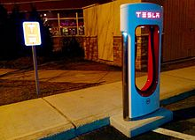
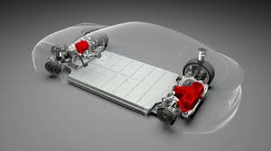
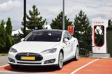
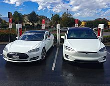
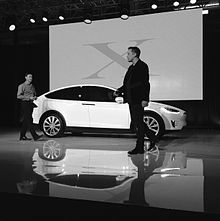

Tesla s mission is to accelerate the world s transition to sustainable energy.
Tesla, Inc. (formerly named Tesla Motors ) is an American automaker, energy storage company, and solar panel manufacturer based in Palo Alto, California.[6] Founded in 2003, the company specializes in electric cars, lithium-ion battery energy storage, and through their SolarCity subsidiary, residential photovoltaic panels.
CEO Elon Musk said that he envisions Tesla as a technology company and independent automaker, aimed at eventually offering electric cars at prices affordable to the average consumer.Tesla is named after Serbian electrical engineer and physicist Nikola Tesla.
The company's Model S was the world's best-selling plug-in electric car in 2015 and 2016. Its global sales reached 150,000 units in November 2016. In September 2015 the company released its Model X, a crossover SUV. The Model 3[20] was released in July 2017.Tesla global sales passed 250,000 units in September 2017.
Tesla operates multiple production and assembly plants, notably Gigafactory 1 near Reno, Nevada and its main vehicle manufacturing facility at Tesla Factory in Fremont, California. The Gigafactory primarily produces batteries and battery packs for Tesla vehicles and energy storage products.
Tesla also manufactures the Tesla Powerwall, Powerpack batteries, solar panels and solar roof tiles.
In 2016, Tesla topped Consumer Reports' Annual Owner Satisfaction Survey at 91%. In February 2017, Consumer Reports named Tesla as the top American car brand and ranked it 8th among global carmakers.
Roadster and private funding
The company was founded in 2003 by Martin Eberhard and Marc Tarpenning, although the company also considers Elon Musk, JB Straubel and Ian Wright as cofounders.The founders were influenced to start the company after GM recalled and destroyed its EV1 electric cars in 2003.
The insignia of Tesla as seen on a Tesla Roadster Sport
Eberhard and Tarpenning funded the company until the Series A round.Musk led the Series A in February 2004, joining the board of directors as its chairman as well as in operational roles. Musk was then the controlling investor in Tesla, providing the large majority of the US$7.5 million round with personal funds.
Tesla began with a sports car aimed at early adopters followed by mainstream and mass market vehicles, all serving "as a catalyst to accelerate the day of electric vehicles".
Tesla signed a Roadster production contract on July 11, 2005, with Group Lotus to produce "gliders" (complete cars minus powertrain). The Roadster used an AC motor descended directly from Nikola Tesla's original 1882 design.
The Roadster was the first production automobile to use lithium-ion battery cells and the first production EV with a range greater than 200 mi (320 km) per charge.[36] Between 2008 and March 2012, Tesla sold more than 2,250 Roadsters in 31 countries.Tesla stopped taking orders for the Roadster in the U.S. market in August 2011.
In December 2012, Tesla employed almost 3,000 full-time employees. As of late 2016, Tesla now employs over 30,000 (25,000 in the US) after acquiring Grohmann and SolarCity.
Tesla deliveries vary significantly months due to regional issues such as ship availability and registration. Tesla does not follow the auto industry standard of monthly reporting.Some monthly sales are estimated by media.
Batteries

Tesla Supercharger in West Hartford, Connecticut
Unlike other automakers, Tesla does not use individual large battery cells, but thousands of small, cylindrical, lithium-ion commodity cells like those used in consumer electronics. It uses a version of these cells that is designed to be cheaper to manufacture and lighter than standard cells by removing some safety features. According to Tesla, these features are redundant because of the advanced thermal management system and an intumescent chemical in the battery to prevent fires.Panasonic is the sole supplier of the cells and cooperates with Tesla in the Gigafactory 1's '21-70' cells.
In February 2016, Tesla battery costs were estimated at US$200 per kWh. Tesla indicated later in 2016 that their batteries cost less than $190/kWh. Still later that year Argonne Labs estimated $163/kWh at a production rate of 500,000 packs per year.
In February 2016, Tesla battery costs were estimated at US$200 per kWh. Tesla indicated later in 2016 that their batteries cost less than $190/kWh.Still later that year Argonne Labs estimated $163/kWh at a production rate of 500,000 packs per year.
The batteries are placed under the vehicle floor. This saves interior and trunk space but increases risk of battery damage by debris or impact. The Model S has 0.25 in (6.4 mm) aluminum-alloy armor plate. CTO Straubel expected batteries to last 10–15 years, and discounts using electric cars to charge the grid (V2G) because the related battery wear outweighs economic benefit. He also prefers recycling over re-use for grid once they reach the end of their useful life for vehicles.Since 2008, Tesla has worked with ToxCo/Kinsbursky to recycle worn out RoHS batteries, which will be an integral part of GigaFactory.
Motors

Tesla Motor.
Tesla makes electric induction motors with three phase, four pole AC and copper rotor.[186] Motors for the Model S and Model X are made at Tesla Factory, while motors for Model 3 are made at Gigafactory 1.
Autopilot
Tesla Autopilot provides semi-autonomous driver assist beginning in September 2014. Tesla replaced its sensors and software in 2016 (HW2). As of 2017, Autopilot included adaptive cruise control, lane departure warning, emergency braking, Autosteer (semi-automated steering), AutoPark (parallel and perpendicular parking) and Summon (recalling the vehicle from a parking place). HW2 became HW2.5 with summer 2017 upgrade that included a second GPU and a driver-facing camera.
HW2 includes eight cameras and twelve ultrasonic sensors, in addition to forward-facing radar.
At the end of 2016, Tesla expected to demonstrate full autonomy by the end of 2017. In April 2017 Musk predicted that in around two years drivers would be able to sleep in their vehicle.
Tesla glass
In November 2016, the company announced the Tesla glass technology group. The group is developing glass for use in SolarCity roof tiles that were announced in October 2016. The group also manufactures the roof glass for the Tesla Model 3.
The glass roof tiles which contain an embedded solar collector are one third lighter than standard roof tiles.
Model S
Tesla Model S deliveries to retail customers began in June 2012
Model S deliveries began on June 22, 2012. The first delivery in Europe took place in August 2013.[198] Deliveries in China began in April 2014.First deliveries of the right-hand-drive model destined for the UK, Australia, Hong Kong and Japan came in 2014.
The Model S has four base configurations: the 75D (2-wheel and all-wheel), and the 100D and P100D with ranges of 335 miles and 315 miles respectively.
Sales
Quarterly Model S global sales up to September 2017

Tesla Model S deliveries to retail customers began in June 2012
With an estimated 50,931 units sold in 2016, the Model S ranked as the world's best-selling plug-in car for the second year in a row. As of December 2016, the Model S was the world's second best selling plug-in electric car in history after the Nissan Leaf with over 158,000 units sold. Quarterly sales peaked in Quarter 4 of 2015.
Norway is the Model S largest overseas market thanks to the country's comprehensive incentives for the adoption of pure electric cars.
The United States is the world's leading Model S market with an estimated 92,317 units sold through December 2016. Norway is the Model S largest overseas market, with 11,802 new units registered through October 2016. The Tesla Model S became the first electric car ever to top the monthly sales ranking in any country, when the electric car achieved the first place in the Norwegian new car sales list in September 2013.
Robotic manufacturing of the Model S at the Tesla Factory in Fremont, California
Manufacture
Tesla purchased a stake in what would become Tesla Factory in May 2010 for US$42 million, and opened the facility in October 2010.For the European market, Tesla (re)assembles and distributes the Model S from its European Distribution Center in Tilburg, Netherlands. Cars are built and tested in Fremont; then, the battery pack, the electric motor and parts are disassembled and shipped separately to Tilburg, where they are reassembled.
Model X

Tesla Model X

Tesla Model X
The Tesla Model X is a full-size crossover SUV. Model X deliveries started in September 2015. It is offered in 5-, 6- and 7-passenger configurations. Notably, the passenger doors are artiuculating "falcon-wing" designs that open vertically.
Production was rescheduled several times, from 2013 to late 2014,to the second quarter of 2015, to the third quarter of 2015. In August 2015, user groups estimated around 30,000 X pre-orders, compared to 12,000 for the S.
The Tesla Model X (right) shares the same platform and 30% of the parts of the Tesla Model S (left).
Deliveries of the Model X Signature series began on September 29, 2015. Model X sales totaled 2,400 units during the first quarter of 2016, rising to 4,638 in the second quarter of 2016. Global deliveries totaled 25,312 units in 2016. The United States is its main market with 18,240 units delivered through December 2016.
The Model X ranked as the top selling plug-in electric car in Norway in September 2016. Norway was the world's first country to have all-electric cars topping the new car sales monthly ranking. Previously, the Model S had been the top selling new car four times.